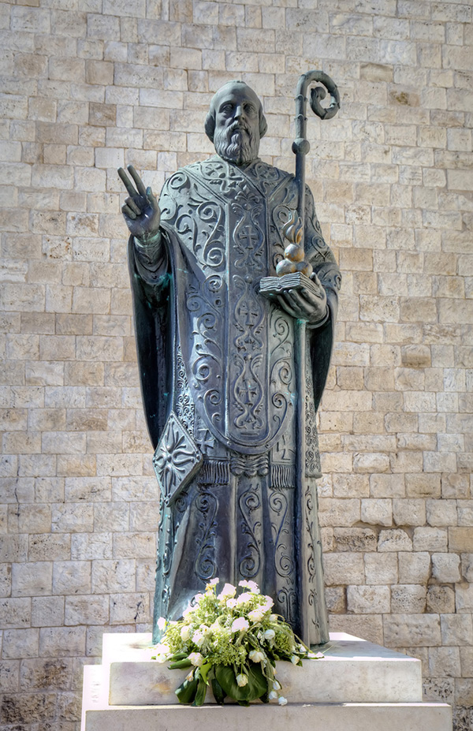

ประวัติและความเป็นมาของวันคริสต์มาส
The origin of Christmas
Christmas or Christmas Day is an annual holiday celebrated on December 25 that commemorates the birth of Jesus of Nazareth. The date of commemoration is not known to be Jesus’ actual birthday, and may have initially been chosen to correspond with either a historical Roman festival or the winter solstice. Christmas is central to the Christmas and holiday season, and in Christianity marks the beginning of the larger season of Christmastide, which lasts twelve days.
The origin of the word Christmas
The word Christmas originated as a compound meaning “Christ’s Mass”. It is derived from the Middle English Christemasse and Old English Cristes mæsse, a phrase first recorded in 1038. “Cristes” is from Greek Christos and “mæsse” is from Latin missa. In Greek, the letter (chi), is the first letter of Christ, and it, or the similar Roman letter X, has been used as an abbreviation for Christ since the mid-16th century. Hence, Xmas is often used as an abbreviation for Christmas.
Christmas history
For many centuries, Christian writers accepted that Christmas was the actual date on which Jesus was born. However, in the early eighteenth century, scholars began proposing alternative explanations. Isaac Newton argued that the date of Christmas was selected to correspond with the winter solstice, which in ancient times was marked on December 25. In 1743, German Protestant Paul Ernst Jablonski argued Christmas was placed on December 25 to correspond with the Roman solar holiday Dies Natalis Solis Invicti and was therefore a “paganization” that debased the true church. In 1889, Louis Duchesne suggested that the date of Christmas was calculated as nine months after the Annunciation (March 25), the traditional date of the Incarnation.